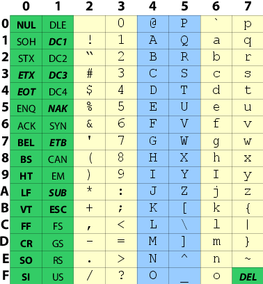

Brief Intro to Terminal Multiplexers
- Show of hands:
- Who here knows what a terminal multiplexer is?
- Who here has used one at some point?
- Who here uses a terminal multiplexer as matter of course?
- Terminal multiplexing: managing multiple terminals within one.
- Switch between terminal “windows”
- See window list at configurable (can be disabled)
- Can also split screen into multiple terminals.
- In tmux, each window has its own layout of "panes", and switching windows switches layouts.
- In screen, layouts are independent of windows, and each frame of a layout can swap any window in (you can even have the same window twice in a layout)
Terminal Multiplexing with Ssh
- Of course, you can have basic “terminal multiplexers” in most terminal emulator programs these days, what with tabbed browsing and what not.
- But how do you use tabbed browsing on remote terminals via single ssh connection?
- And terminal multiplexers allow you to disconnect, reconnect, and everything's still just as you left it. This is probably the major reason to use one.
Multiplexer Choices: screen or tmux
- Both are free. Screen is a GNU project, and GPL;
tmux is BSD-style.
- Equivalent to one another in important features
- tmux command useful for shell scripting;
screen adding scriptability via bindings for Python, Ruby, etc.
- tmux can handle non-ASCII characters in the status line
- screen has built in “digraph” support (can't be used for status bar/window list)
- screen has built in telnet client and zmodem support (often disabled by OS packagers)
- various differences in terminology
- tmux has much cleaner code/easier to hack
A demo of terminal features
[ demos/ansi/all.sh ]
(links to these on final slide)
Terminal problem situations you can find yourself in
- Catting a binary file [ PS1='$ '; cat demos/problems/binary ]
(Seems on more modern terms I have to go out of my way to produce
this situation, but used to be a big problem.)
- Flow control with ^S and ^Q [ demos/problems/infout;
use ^S and ^Q to pause/resume, then kill with ^C
Try also with vim (won't work with emacs)
- stty -echo (sometimes left over from program crash)
Fixing those terminal problems
- Most of these are fixed by reset
- In extreme examples, you may have to type ^J reset ^J
- flow control can't be fixed that way (since you can't type); ^Q to break out of it; use stty to prevent it (more later).
Sending terminal controls with tput
[ demos/sgr/cmd.sh ]
[ demos/interact/cmd.sh ]
[ PLAY AROUND: demos/interact/tmux.sh ]
The ASCII table

Incremental Test
One
Two
Three
Links
- [tmux]
- [screen]
- [vim]
- [nethack]
- [starwars]
- [nyan]
- [script (bsdutils)
- [teseq]
- [terminfo]
- [promptjobs]
- [various ECMA stuff]
- [invisibleisland.net]
Thank you and good night!